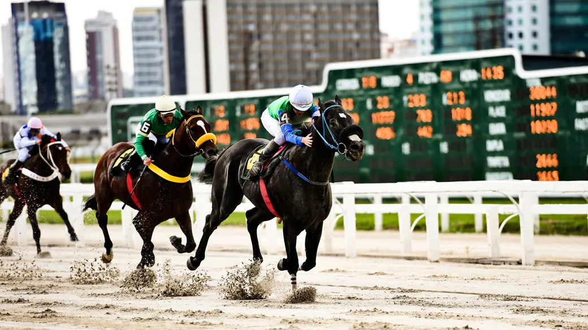
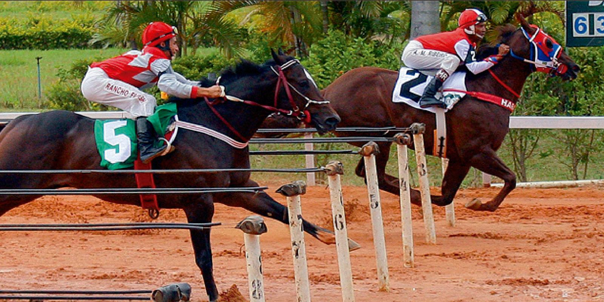
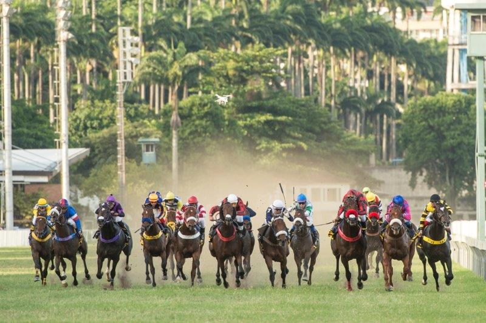
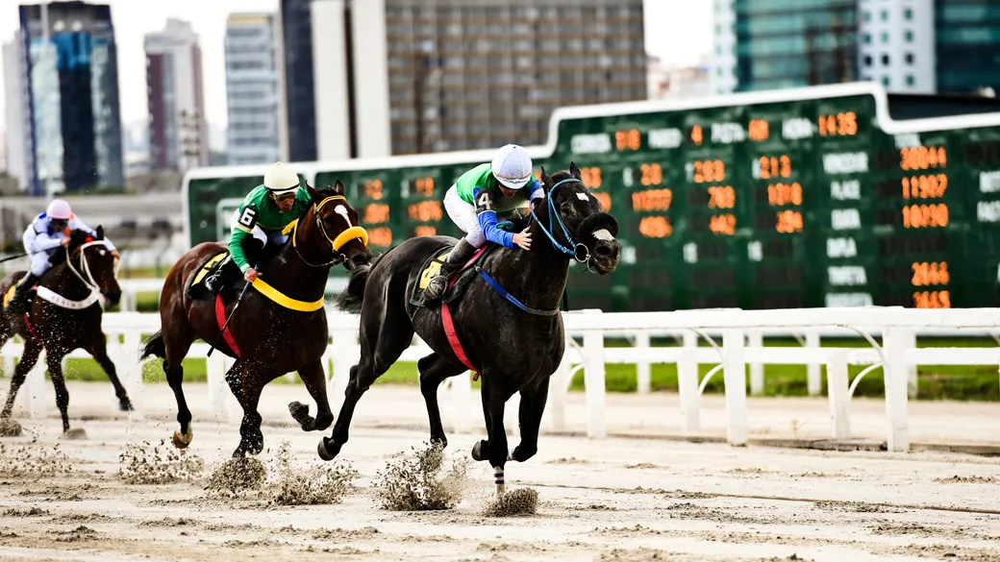
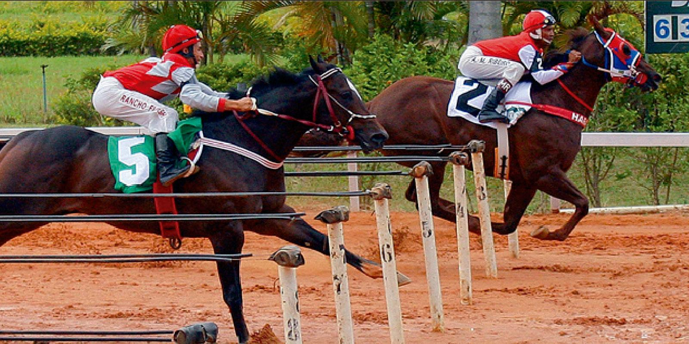
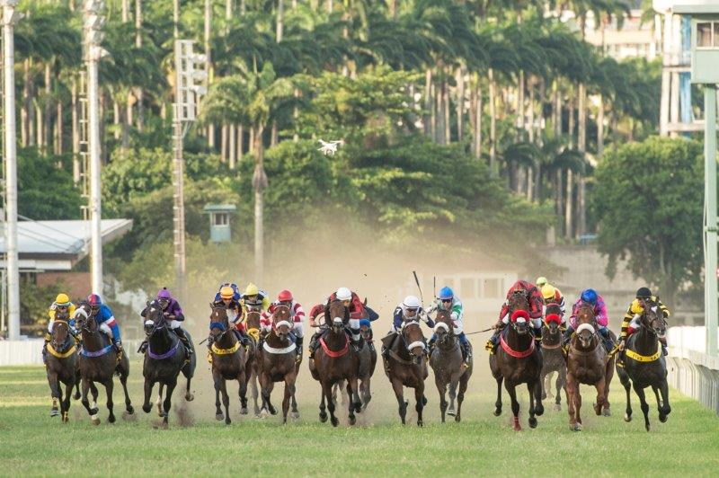

Considerado um dos esportes mais antigos do mundo, a corrida de cavalos (também chamada de turfe) chegou a fazer parte dos Jogos Olímpicos da Antiguidade, mas a origem da modalidade como se conhece hoje está na Inglaterra do século XVII.
De olho na performance durante as competições, os ingleses começaram a cruzar cavalos trazidos da Ásia e da África com bom desempenho em corridas. Como resultado, eles criaram o puro-sangue inglês, uma das raças mais utilizadas nesse esporte.No turfe, os cavalos competem em pistas de areia ou grama, em percursos fechados, geralmente ovais, ou em canchas retas. A distância do percurso varia e, como acontece com os atletas na corrida de rua, são necessárias características diferentes do animal para cada uma delas.
A dinâmica é simples: ganha o cavalo que chegar na frente. Assim como acontece com atletas profissionais, os animais passam por exames antidoping para ter certeza de que estão competindo sem irregularidades. Na mesma reunião turfística, acontecem vários páreos, que é o nome dado a cada corrida de cavalo.
Há 2 principais tipos de corridas de cavalo: flat, sem obstáculos, e jumping, com obstáculos. Esse segundo tipo se divide em steeplechases, com diferentes tipos de dificuldades, como cercas e valas, e hurdles, com barreiras padronizadas.
Um dos títulos mais cobiçados no turfe é a Tríplice Coroa, realizada em cada país em hipódromos diferentes. A Tríplice Coroa na Inglaterra é dada a quem vence nas competições Epsom Derby, 2000 Guineas Stakes e St. Leger Stakes e, nos Estados Unidos, ao ganhador do Kentucky Derby, do Preakness Stakes e do Belmont Stakes.
O turfe atrai espectadores não apenas pela possibilidade de torcer como nos demais esportes, mas também porque há um grande mercado de apostas que serve de atrativo para colocar suas expectativas em um determinado cavalo. No Brasil, as apostas são permitidas e regularizadas por lei. Diferentemente do que acontece nas loterias, nas apostas de corrida de cavalo é possível estudar as possibilidades de cada animal e aumentar as chances de ganho. Entre os páreos, há intervalos para que sejam feitas as apostas.
 




